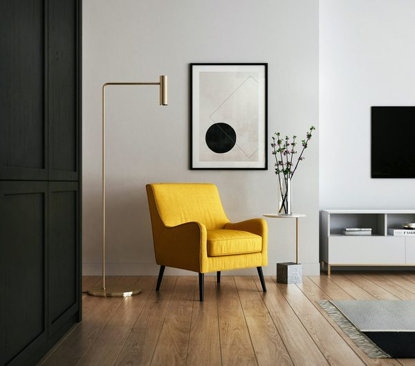

런던 켄싱턴 가든에 2026년 여름 한 채의 임시 건축이 섰다. 제25회 서펜타인 파빌리온. 올해의 설계자는 멕시코시티를 기반으로 한 LANZA 아틀리에(이사벨 아바스칼, 알레산드로 아리엔초)다. 이들이 택한 재료는 유리도 목재도 아닌, 가장 오래된 건축 재료 벽돌이었다. 6월 6일부터 10월 25일까지, 이 벽돌 벽은 막힘과 트임 사이에서 관람객을 맞는다.
'서펜타인'이라는 이름의 벽
파빌리온의 제목은 소문자로 'a serpentine'. 갤러리와 인근 하이드파크 호수의 이름이기도 한 이 단어는, 사실 영국 정원 전통의 구불구불한 담장 형식(크링클-크랭클 월)을 가리킨다. LANZA는 이 지역 고유의 건축 요소를 파빌리온의 뼈대로 삼았다. 벽돌을 고른 이유도 분명하다. 원래 찻집으로 지어진 서펜타인 사우스 갤러리의 벽돌 파사드와 대화하기 위해서다. 파빌리온은 이 장소의 기억에서 재료를 빌려온다.

막힌 벽이 투과성이 되는 순간
핵심은 벽이 고정된 경계가 아니라는 점이다. 파빌리온은 벽돌 기둥의 리듬 있는 반복으로 구성되고, 그 반복이 벽을 불투명(opaque)에서 투과성(permeable)으로 바꾼다. 관람객이 움직일수록 벽은 닫혔다 열리기를 반복한다. 정적인 담장이 시선과 발걸음에 따라 표정을 바꾸는 것이다. 무거운 재료로 가벼운 경험을 만드는, 재료와 지각(perception) 사이의 오래된 질문에 대한 새로운 대답이다.
"벽돌은 가장 무거운 약속이다. LANZA는 그 무게로 가장 가벼운 경험 — 막혔다 트이는 벽 — 을 만들었다."
왜 이 파빌리온이 한국에도 신호인가
서펜타인 파빌리온은 매년 세계 건축 담론의 온도계 역할을 한다. 올해의 메시지는 명확하다. 첨단 소재나 스펙터클이 아니라, 벽돌이라는 가장 익숙한 재료의 재해석이 무대의 중심에 섰다. LANZA는 프리다 에스코베도(2018)에 이어 두 번째 멕시코 건축가로, 비서구·비유럽 건축가가 세계 무대의 언어를 다시 쓰는 흐름을 잇는다. 지역 고유의 재료와 형식을 세계적 문법으로 번역하는 이 태도는, K-건축과 국산 자재가 글로벌 무대에서 어떤 이야기를 들고 나설지에 대한 참고서이기도 하다.
편집장 코멘트
ARCHINODE가 주목하는 지점은 '재료의 서사'다. 서펜타인 2026은 벽돌 하나로도 세계가 주목하는 이야기를 만들 수 있음을 보여준다. 한국의 벽돌·타일·목재·석재 브랜드에게 필요한 것은 더 화려한 스펙이 아니라, 자기 재료가 어느 장소의 기억과 연결되는지를 설명하는 언어다. 재료를 파는 시대에서 재료의 이야기를 파는 시대로 — 그 전환을 이 파빌리온이 다시 확인시킨다.